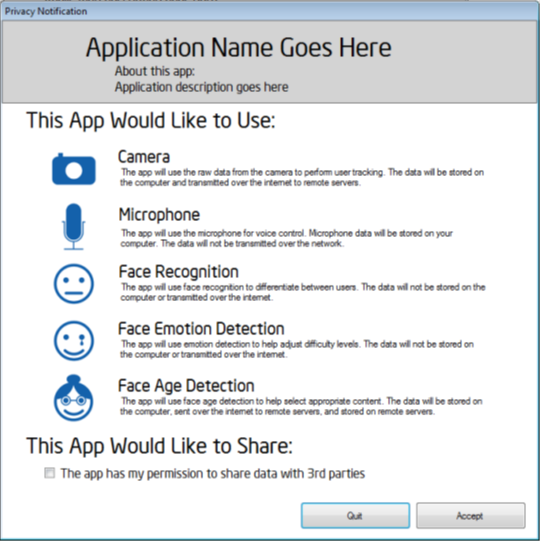

Example of Privacy Notification Page |
Top Previous Next |
|
An example notification page that could be displayed to end users is provided in Figure 4. This information should be displayed every time a new user is running the application for the first time. Another option is to display the information during installation and then include a link to the details every time a new user is running the application for the first time.  Figure 4: Example Privacy Notification Page
|